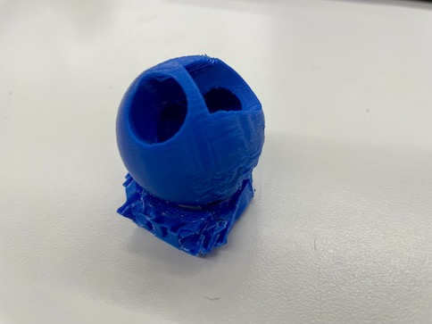
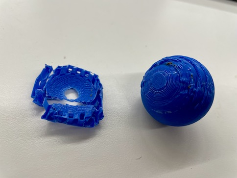
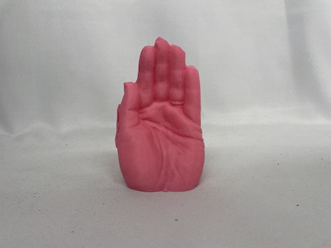
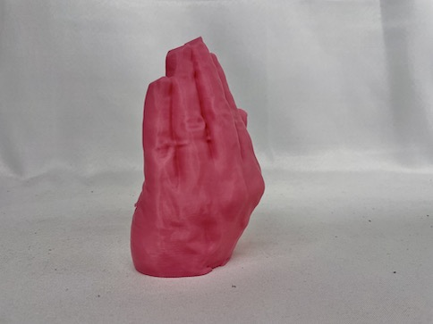
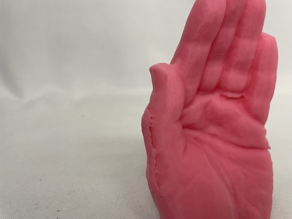
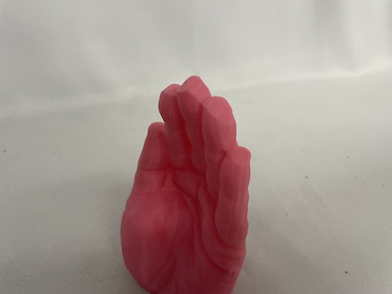

<br>
#### Week 5: 3D Design, Printing, Scanning
I designed and printed a small sphere with holes in it. It was a first good experience because I saw the risks of printing in a position that requires support material
<a download href='../files/Ball_Thing.stl'>Download my STL file</a>


I then scanned my left hand using the 3D camera:
<a download href='../files/Fabian_Left_Hand_v2_20231004_0.2mm_PLA_MK3S_8h37m.gcode'>Download my gcode file </a>


It took about 8 hours for the hand to be printed. I saw that the tips of my fingers and the side of my thumb didn't scan very well. In the case of my thumb, I assume that it is due to me slightly moving as the 3d camera scanned my hand. As for the finger tips, I should have provided more time for the software to scan the finger tips. I used the "fill in holes" option in order to compensate for that within RevoStudio

